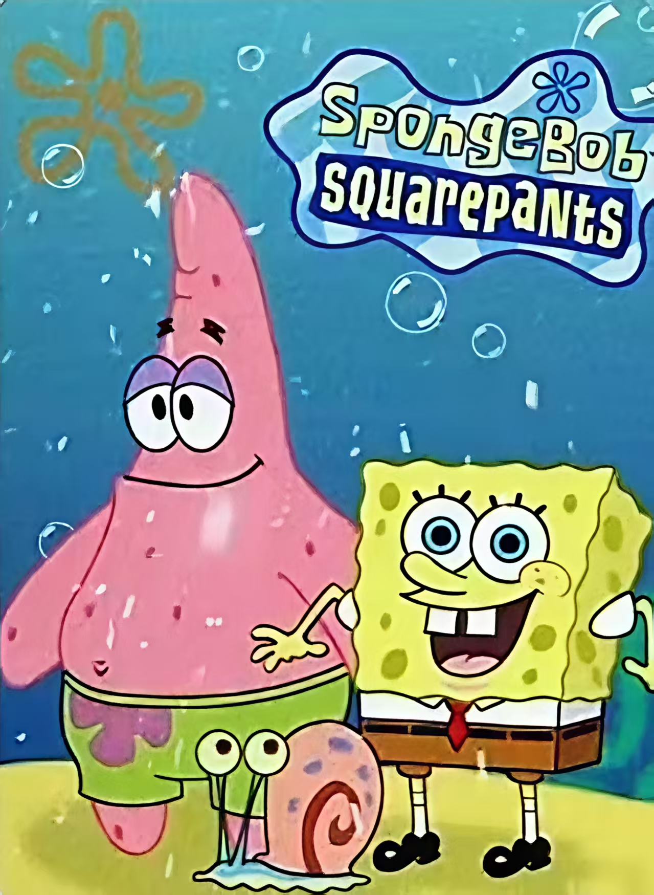

《海绵宝宝》(SpongeBob SquarePants) 是一部由史蒂芬·海伦伯格原创，舍曼·科恩、沃特·杜赫、山姆·亨德森、保罗·蒂比特、沃尔特·道恩等导演，汤姆·肯尼、比尔·法格巴克、罗杰·布帕斯等配音的美国喜剧动画，于1999年7月17日在尼克国际儿童频道开播。
《海绵宝宝》的故事情节主要围绕着主角海绵宝宝和他的好朋友派大星、邻居章鱼哥、上司蟹老板等生物展开，场景设定于太平洋海底，一座被称为比基尼海滩的城市。2005年1月30日，该片荣获第32届安妮奖授予的“最佳TV动画制作”奖。
这部动画除了固定描绘的卡通场景与人物之外，也会穿插一些真实的物件或人物：例如曾出演《海滩游侠》与《霹雳游侠》的大卫·哈塞尔霍夫，以本人的身份出演了几集。但海绵宝宝卡通的内容基本上与海洋知识无关，甚至夸大到完全不合乎科学与常识，例如海底生火、海底冲澡等，剧集内容也会时不时的嘲笑精致艺术和章鱼哥的劳工权益想法。
海绵宝宝的故事
海绵宝宝是方块形的黄色海绵，住在比基尼海滩（裤头村、比奇堡）的一个菠萝里，他的宠物是一只会“猫~猫~”叫的海蜗牛小蜗，海绵宝宝喜欢捕捉水母，职业是蟹堡王（The Krusty Krab）里的头号厨师。派大星和姗迪都是他的朋友。海绵宝宝总是能给平静的世界制造麻烦，虽然闹出一些笑话，不过他总能摆脱困境，然后又制造出新的麻烦。